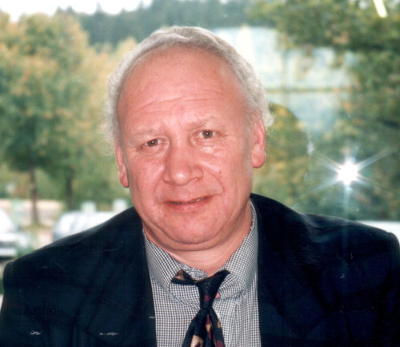

Workshop on Non-equilibrium Flow Phenomena in Honor of Mikhail Ivanov's 70th Birthday, Akademgorodok, Novosibirsk, Russia, June 15-18, 2015
Mikhail Ivanov, an eminent scientist in the field of rarefied gas dynamics and shock wave physics, would have turned seventy in 2015. To honor his memory Institute of Theoretical and Applied Mechanics where he worked for 45 years and Novosibirsk State University where he taught students are organizing a Workshop on Non-equilibrium Flow Phenomena on June 15-18 2015. The workshop will be held in Akademgorodok, a unique “scientific town” built in Siberian forest near the city of Novosibirsk, where Mikhail lived from 1968 till his last days. The scope of the workshop will cover all topics related to rarefied and non-equilibrium flow phenomena, gas kinetic theory, physics of shock waves, spacecraft aerothermodynamics, and applications of particle methods to non-equilibrium flows.
You are kindly invited to contribute to the workshop submitting a one-page abstract written in English to Dr. Anton Shershnev <antony@itam.nsc.ru> (Scientific secretary of the workshop) by March 31, 2015. The abstract file should contain affiliation and contact information of the presenting author. PDF, DOC, DOCX, RTF, ODT or TXT files are accepted.
Looking forward to seeing you in Novosibirsk!
The workshop official language: English
Deadline for one-page abstract submission: March 31, 2015